Extracted from a much broader article titled, TRIPLE THREAT — Escrima's Fighting Forms Promise the Utmost in
Baton, Knife and Empty-Hand Versatility! published in Black Belt magazine, March, 2003.
Note: This drill is very basic and is only one of many such drills. More importantly, it is only a drill. Mastering it will go a long way toward improving your self-defense skills, but it will not (repeat, will not) make you a knife fighter.
The basic drill consists of five couplets of two-movement actions: an initial defensive action followed by a counterattack. Each couplet follows this pattern, and practiced correctly, enables both players receive equal training time.
|
Couplet Number One
The drill begins with player-B (on the right) advancing with his right foot and attacking with a high right-hand strike that descends vertically toward player-A's head or face (called a 12-line in most Filipino systems). Using this as the starting point, the drill progresses through a series of five couplets or linked pairs. Each couplet begins with an initial defensive action followed by a counterattack.
As player-B advances and attacks with his descending right-hand strike, player-A defends by first stepping back with his right foot as his left hand intercepts B's right arm (close to B's hand). Simultaneously, A's knife (in his right hand) slashes his attacker's right forearm (Photo 1a). (Admittedly, such an attack with a blade is weak and almost as dangerous for the attacker as it is for his intended victim; however, exchange the knife for a beer bottle, club, or screwdriver, and its weakness fades into reality.)
Player-A's blade cuts from left to right as his left hand simultaneously carries B's attacking right arm right to left, thereby increasing the effectiveness of the cut while, at the same time, directing the attacker's weapon away. Player-A ends his defense here with his knife pointed toward his opponent, forward of his face and approximately six inches away from it (Photo 1b).
Player-A now begins his counterattack — a diagonally descending right-to-left cut to the left side of player-B's face (Photo 1c). (What is important here is the line of attack, not the target because the line is easily applied to a variety of targets.) With this counterattack, the first couplet is complete and player-B now gets his turn at defense and counterattack.
|
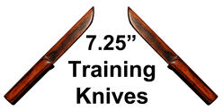
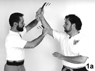
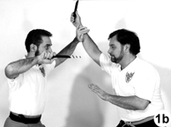
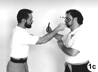
|
|
Number Two
Using his knife, player-B's initial defense is not a block. Instead, it is a downward cut across the inside of A's right forearm, as in Photo 2a (a cut closer to the elbow actually incapacitates an attacker's arm better than a cut nearer his hand). This defense is a two-count movement: the cut is the first count, and B's empty left hand striking A's weapon-wielding arm (Photo 2b) is the second.
The two-count movement is important here because even if the cut (the first action) is successful, the defender may still retain the knife (albeit with a substantially weakened grip). In that case, a sharp follow-up blow to the injured arm has an excellent chance of dislodging the weapon.
Completing the second couplet, player-B counterattacks with a horizontal left-to-right slash (Photo 2c) across A's abdomen (a 4-line in Filipino systems). A successful cut across the stomach muscles weakens the attacker because abdominal support must then be provided by smaller secondary muscles like the psoas muscles (muscles that parallel the abdominal muscles but are located on the inside of the spine).
|
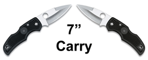
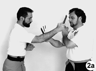
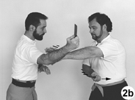
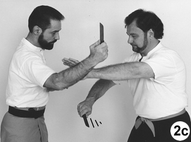
|
|
Number Three
Player-A's defense against B's last counterattack is a simple one: He simply drops his left arm over his opponent's as he pulls his abdomen back out of harm's away. Simultaneously, player-A slashes out with a horizontal right-to-left motion (Photo 3a) against the closest practical target.
Checking the attack with his left hand might seem a better move; however, such a check requires much greater precision than a fast-moving knife attack allows. Simply extending the left arm over and dropping it onto the attacking arm effectively redirects the opponent's attack. The assailant's weapon arm naturally follows the line of seemingly least resistance (to the defender's midsection); however, with a slight outward movement of his left arm, the defender easily redirects the attack, which is exactly what player-A does.
As Player-A guides B's knife hand to his left, he brings his blade quickly back (now left to right), cutting back across his attacker's lower arm motion (Photos-3b and 3c).
Concluding the third couplet is A's counterattack: a thrust of his blade to B's torso, as in Photo 3d (a 5-line in Filipino systems).
|
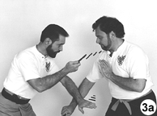
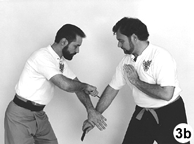
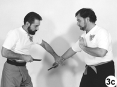
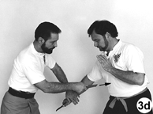
|
|
Number Four
Player-B's response to A's thrust is a left-to-right redirection of A's right knife hand, coupled with a simultaneous right-to-left cut of A's forearm (Photo 4a). This crossing shear-like action has incredible cutting potential.
B's counterattack is a quick left-to-right downward diagonal (called a 2-line in Filipino systems) cut to the right side of A's face (Photo 4b). (As was the case in the forehand action shown in Photo 1c, the most important principle here is the line of attack, not the target. Again, because the line of attack is easily followed against a variety of targets.)
|
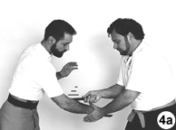
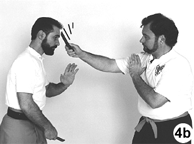
|
|
Number Five
The final couplet we also call "curls." As player-B makes his downward diagonal slash to the right side of A's neck or face, player-A intercepts B's right arm at or just above B's right elbow and immediately cuts upward (in an action that looks much like a "curl" in weight-lifting) and against B's rapidly descending right arm (Photos-5a and 5b). (It is important that A's left hand remain forward of his right knife hand in this maneuver. If they are reversed, A's left hand is highly susceptible to being pinned beneath his right if his right arm is pressed.)
Completing this couplet finishes the drill. From here, player-A advances with his right foot and attacks with a descending right-hand strike to player-B's head, as in Photo 5c. (Again, the same action that player-B first used to start the flow.) As player-A counterattacks, player-B withdraws, stepping back with his right foot and thus beginning his portion of this cyclical drill.
|
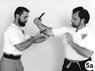
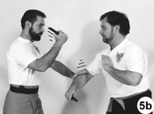
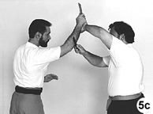
|
Conclusion
This drill does not address every possible attack, nor does it teach all possible counters. Moreover, even cursory discussion of other critical elements like angling and footwork has been omitted. It does, however, show you how a variety of effective tactics can be developed very quickly for use against a variety of knife attacks. With just one basic pattern, the student learns defensive tactics against assaults coming at him from a half-dozen common lines of attack. It just doesn't get any easier than that.
|
The following animated view
should pull it all together.
JavaScript slide show freely provided by
Javascript Kit
|
|